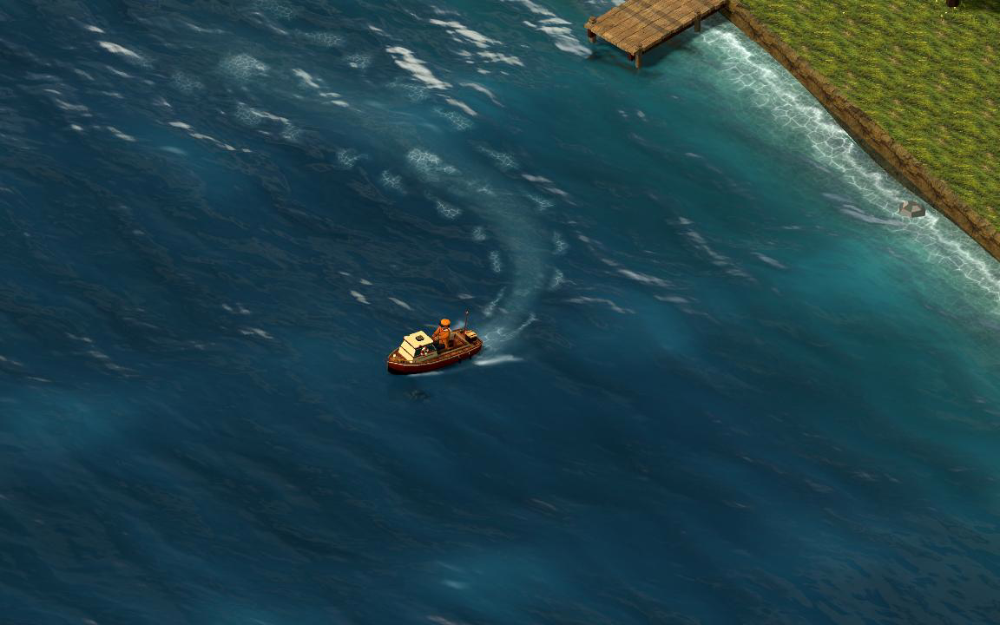

Postalion
Five islands, five letters, and a little red mailboat. Download the game for Windows or Mac and make your first delivery.

Join the team
The game is invite-only. You can do these three steps on your phone, then open this same page on your computer to play.
- Create a GitHub account and verify your email, or sign in to an existing account.
- Send your GitHub username in the team’s WhatsApp chat so the project owner can invite you. Find it by clicking your profile picture on GitHub.
- When your invitation arrives, open the email and click Accept invitation. You can also open your pending invitation while signed in. Then come back here.
Download & play
Open this page on your computer and sign in to GitHub in the same browser. If this is your first visit, join the team first. Each download includes the game and everything it needs to run.
Windows
For a 64-bit Intel or AMD PC. Right-click the ZIP and choose Extract All. Open the extracted folder and double-click Postalion.exe.
Download for WindowsMac
For Apple silicon and Intel Macs. Double-click the ZIP if your browser hasn’t unpacked it. Drag Postalion.app to Applications and double-click it.
Download for MacI see “404” or “Page not found”
Return to GitHub and check the username under your profile picture. Sign in to the account you sent the team and accept your invitation. If you’re still waiting for one, leave your username in the team chat. Once you have access, open the release and choose the ZIP for your computer under Assets.
My computer shows a security warning
Use the ZIP linked on this page. If Windows SmartScreen says the publisher is unknown, choose More info → Run anyway if you trust the team build. If your Mac blocks the first launch, open System Settings → Privacy & Security, scroll to the Postalion message and choose Open Anyway. On a managed work computer, ask your administrator if these options are unavailable.
Your first delivery
Walk to the red postbox on Pineward and press E to read the letter. Press E again to fold it. Follow the wooden pier and press E when “Board the launch” appears.
WASD or arrow keys to moveM sea chartI field bag
Help make Postalion
Once you’ve accepted your invitation, follow the team guide to open the project in Godot, change one item, and share your edit for review.
Open the step-by-step editing guide